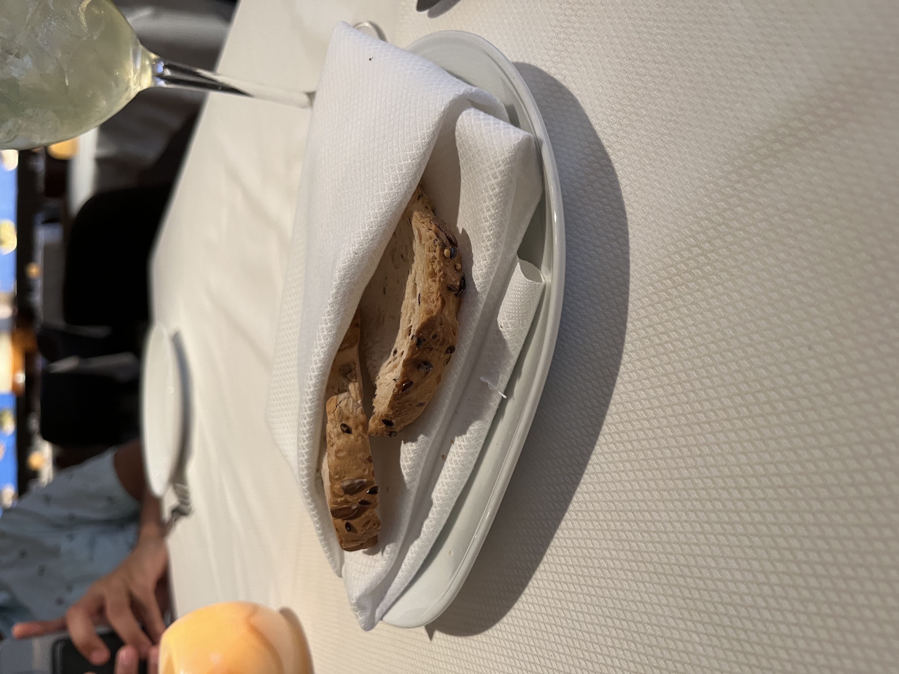
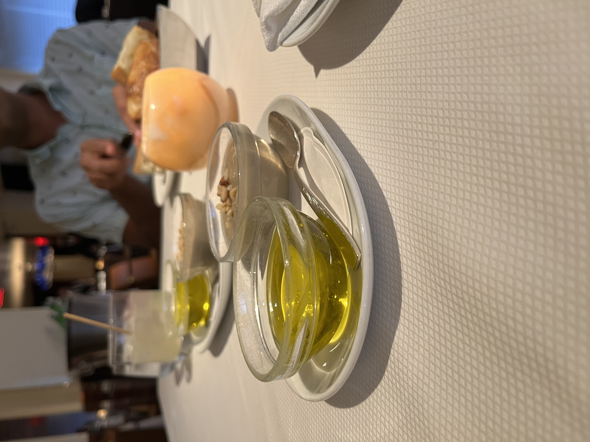
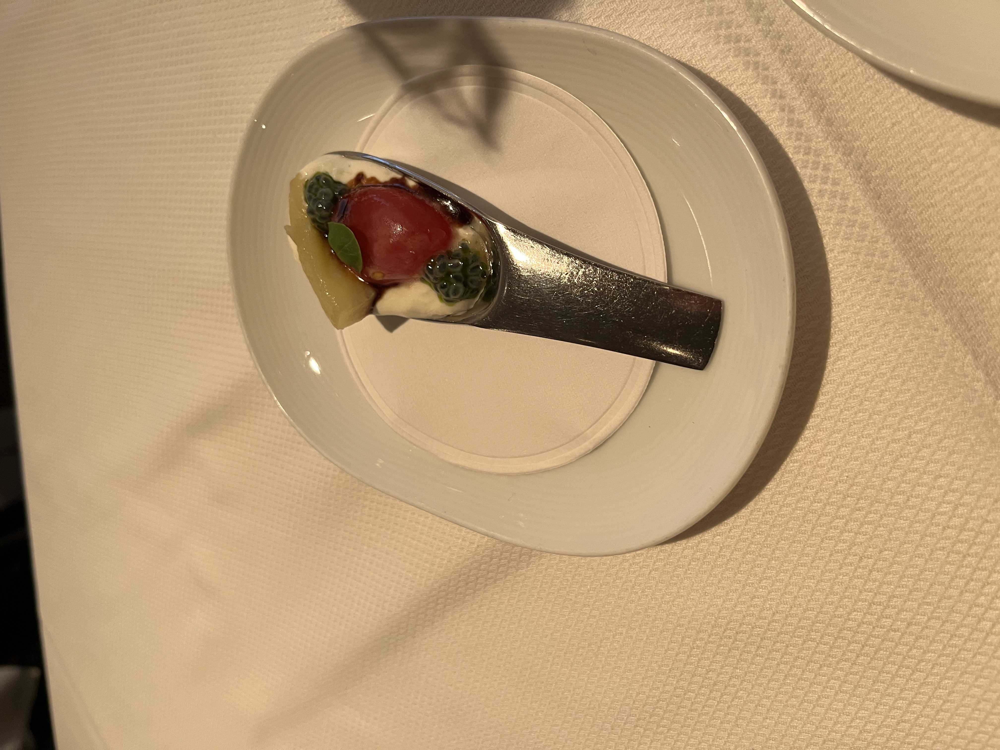
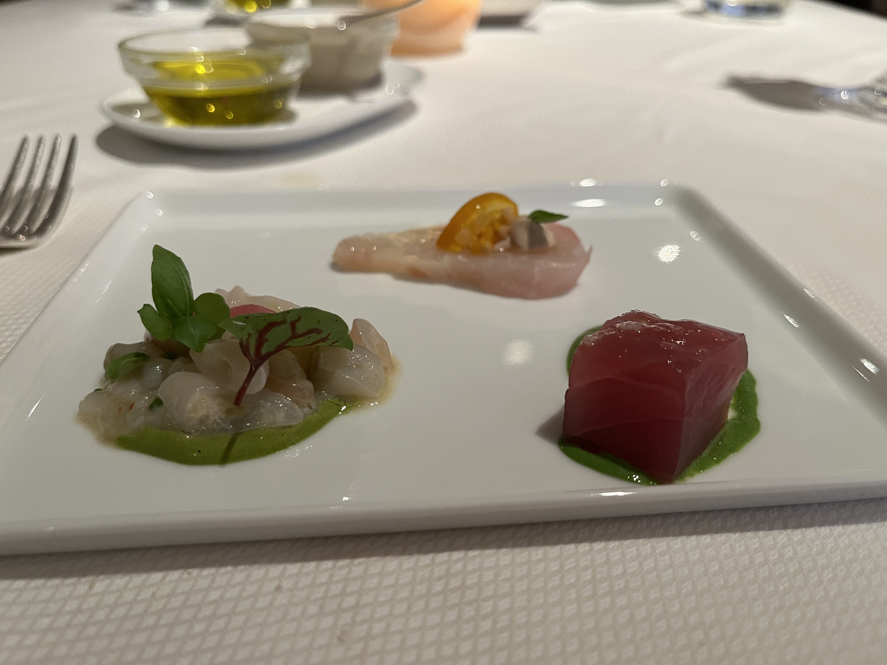
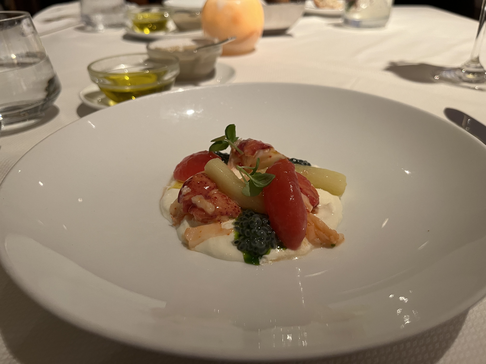
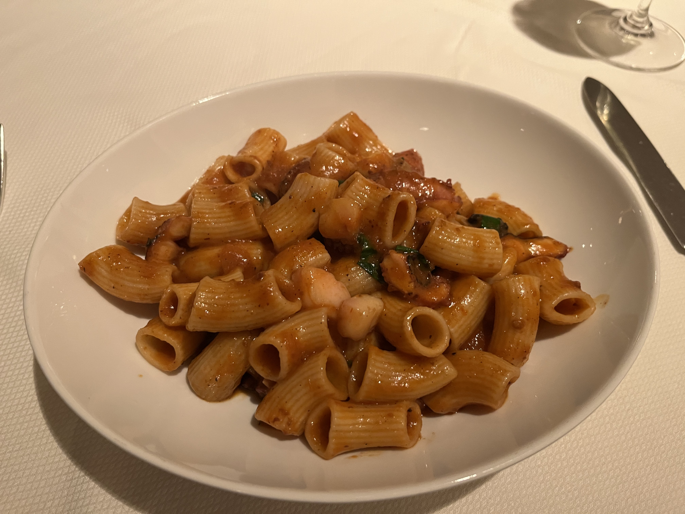
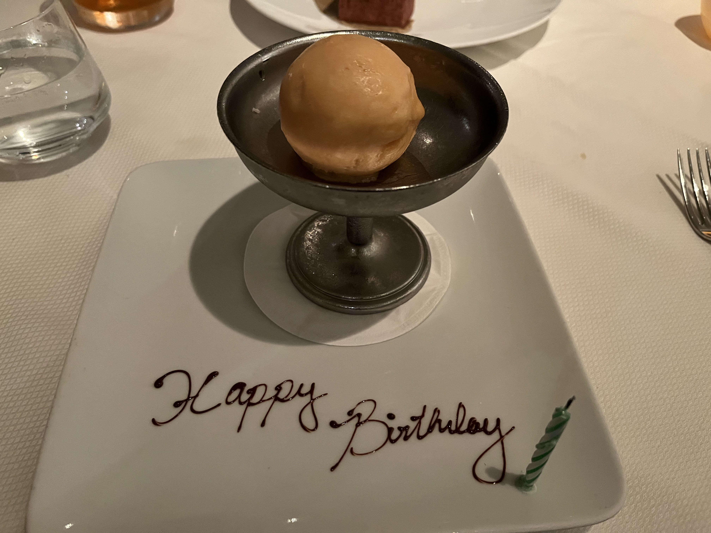
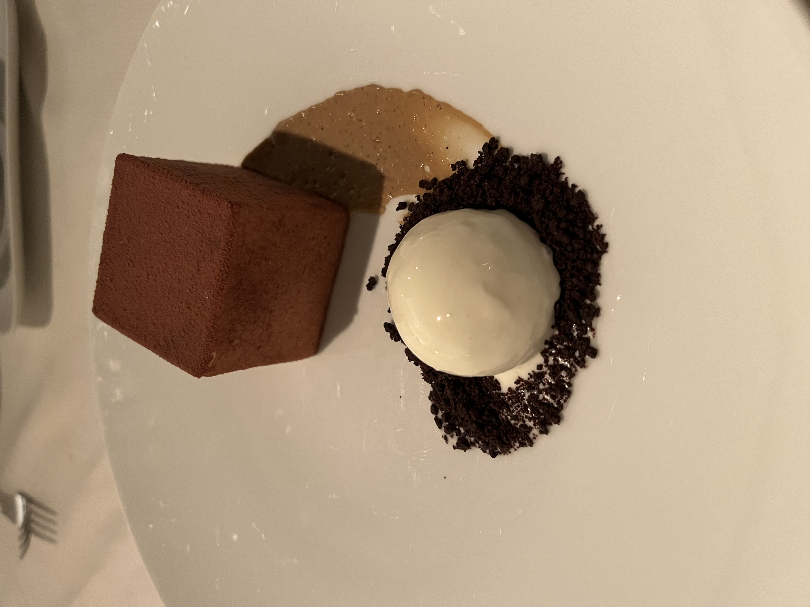

Marea
Columbus Circle, New York City
Introduction
We went to Marea to celebrate my birthday a few days late. We spent only part of the day in New York and had high tea just before going to the restaurant. It turns out that high tea actually involves a lot of food, so this might have hampered our enjoyment of the food (as opposed to if we had gone on empty stomachs). Regardless, we thoroughly enjoyed everything we did eat at Marea.
It had started raining, so we decided to get to the restaurant earlier and grab a drink at the bar if we needed to wait for our reservation. We arrived slightly before 5pm for a 5:45pm reservation, but the staff were very accommodating and sat us as soon as the restaurant team meeting was over. In the few minutes we spent at the bar, we checked the New York Times review of the restaurant for suggestions on what to order. The basic gist we had was that appetizers and pasta were good, but the fish-centric second course dishes were not. This was OK with us at the time, because we weren’t especially hungry.

Service
Before even talking about the food, I have to mention the service. Our waitress (whose name I regrettably didn’t get) was incredibly attentive and thoughtful without hovering over us. She had great recommendations and went above and beyond to ensure all of the food coming to our table was gluten-free. We also appreciated the other service members of the restaurant, especially that someone came by and re-folded our napkins when we got up to go to the restrooms.
Bread and Amuse-Bouche


The free offerings of a restaurant speak volumes. The gluten-free bread here was not exciting. It was cracker-like in texture and had some weird seeds stuck to the crust as is common practice. I never understood the seeds on the side of the bread: like, does it mean there are seeds in the bread? Is it some kind of healthiness indicator? The dipping options shined here. They provided olive oil and an incredible eggplant mousse-like spread with it. It was quite surprising to get something eggplant-forward at a seafood restaurant, but the rest of the meal also heavily featured eggplant (in part because of our item selections).

The amuse bouche was a twist on a caprese salad, and it also featured eggplant. To be honest, it didn’t particularly arouse my taste buds. It also didn’t convey a clear vision for what our meal would look like or what flavors would be highlighted (except for eggplant, which tasted wildly different each time we ate it). A great bite, but not one that lingered and excited the mind.
Crudi and Starter

We were excited about a few different crudo options, so we got the “Assagio de Tre,” which read like the chef would select three exciting crudi for us, but actually just meant we had to pick the three we wanted samples of. We got the hamachi, tonno, and cannolicche (without the gluten-containing fried ingredients). I didn’t enjoy the cannolicche as much as the other two, but that may have been because of a general aversion to clam texture. The hamachi was by far the best bite in terms of composition: the bite traveled smoothly from the gentle fish flavor to the citrus from the kumquat. The raw tuna was most satisfying as far as the fish quality was concerned, but I’m not sure if that’s just because it was cut in a shape that made the bite feel more substantial (and maybe closer to what I’m used to from raw fish). Overall, I think the crudi was worth it but didn’t seem to convey a distinctly Italian theme.

We got the Astice, an intriguing combination of eggplant, cheese, and lobster, on the recommendation of the New York Times article. I’m very new to lobster (and seafood in general), but this dish educated me on the appeal of lobster. Interestingly, the eggplant strips and the tomatoes served the same purpose: bursts of acidity amid a creamy umami experience. The burrata was probably whipped and wrapped nicely around the hunks of lobster while adding to the texture of each bite.
Main Dish

We got the gluten-free pasta with red wine braised octopus and bone marrow. Our waitress suggested that was the most popular dish the restaurant was known for. I found the octopus delicious and tender, and the bone marrow pieces lended a pop of richness to the dish. Unlike most pasta-plus-something dishes, the entire item was cohesive, and it felt like each ingredient needed the others. The sauce adequately coated the pasta without pooling into the bottom of the bowl, and the chew of the octopus benefited from the melting bone marrow texture.
The gluten-free pasta was incredible. I recently started making my own (overly thick) gluten-free noodles at home, so I’m no longer satisfied with the standard gluten-free pastas that disintegrate in sauces. It was clear the restaurant put effort into making this pasta, and the ridges and shape held steadfast amid slippery conditions.
Desserts

We immediately ordered the tiramisu (and our waitress knew we would leap at the option of gluten-free tiramisu). But, we actually also received a tropical sorbet because we were celebrating my birthday. The sorbet may have been more exciting if I hadn’t just eaten three giant scoops of sorbet at high tea. Anyways, I appreciated the thought and design.

The tiramisu came through a stunning presentation. The cube, dusted in cocoa flours on five of its sides, was very unique. It came with some cream and cookie-esque crumbles, but the cake itself was the star. The cream and the cake were the same texture, and my fork glided through the cross-section just under the force of its weight. The flavors were strong and evenly distributed through the layers, and it was simply the best tiramisu I’ve ever had, gluten-free or not. There were no twists on the dessert: it was just the classic item executed perfectly.
Drinks
On top of this fantastic dessert, our waitress and the restaurant’s bartender worked together to make me a dessert cocktail. We requested something with Bailey’s in it but without coffee, and the bartender whipped something up that was unique, tasty, and perfectly matched the tiramisu’s flavor profile.
During the main meal, I got the navy punch cocktail, which purportedly contained “clarified milk.” I was nervous about it but reassured by my waitress, and indeed, the cocktail was clear and did not actually have milk in it. It had a creaminess that was reminiscent of cream soda. Our waitress told us the cocktail takes 4 days to create, and I fully believe it, given the flavor profiles developed.
Summary
Our meal at Marea was delicious, though it was hard to grasp the culinary theme or vision from the dishes we got. Most items alone were fantastic, and the use of eggplant was innovative and thought-provoking. We followed the NYT suggestion and stayed away from any courses after the Primi section of the menu. The service, including the accommodations for celiac disease, was amazing and elevated the experience. If I returned, I would order many of the same dishes and try another pasta, since that gluten-free pasta did not let down my expectations.